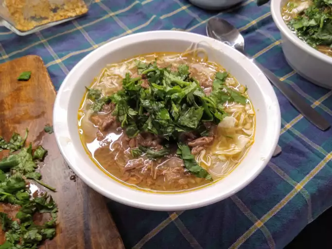

Pho

Description
Authentic, Vietnamese pho soup is all about the broth! Beef bones, fish
sauce, star anise, and ginger simmer for at least 6 hours, creating a
complex, aromatic broth that may not be quick, but it's certainly
delicious. The flavorful broth is ladled over rice noodles and thinly
sliced beef and topped with fresh garnishes.
Ingredients
- Beef Soup Bones
- Rice Noodles
- Beef
- Fish Sauce
- Onion
- Spices and Seasonings
- Garnishes
Steps
-
Roast the beef bones and onions until the bones are browned and the
onions are soft.
-
Combine roasted beef bones, roasted onions, ginger, salt, star anise,
fish sauce, and water in a large stockpot. Allow to simmer for 6 to 10
hours. Then, strain the broth into a new saucepan.
-
Allow dry rice noodles to soak for 1 hour. While they're soaking, bring
broth to a simmer.
-
Cook the rice noodles in boiling water. Drain and add noodles to a bowl
topped with sirloin, cilantro, green onion, and broth. Garnish with your
desired toppings.